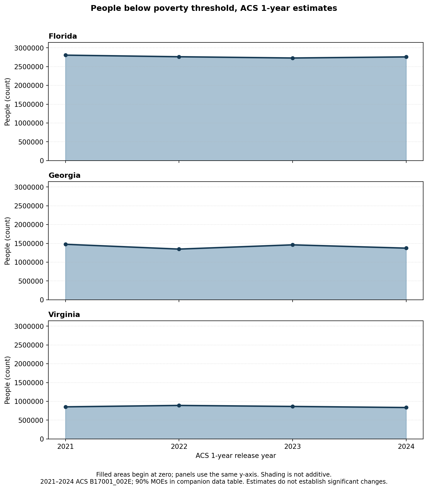

Apply the Census Bureau Statistical Quality Standards, revised September 29, 2026, within their stated scope. The chart-selection advice and implementation checks on this page explain practical design choices; they do not create additional agency mandates. Treat Essential items as the core design conditions for this chart, and confirm formal applicability through the program’s review process.
Coordinate this page with Titles and Subtitles, Legends, Sources, and Visualizing Uncertainty. Keep detailed component guidance in those shared pages rather than duplicating it here.
An area chart connects observations in their natural order and shades the region between the line and a meaningful baseline, ordinarily zero. Shading emphasizes quantity or magnitude as well as change. This page concerns non-stacked area charts. For cumulative parts of a whole, consult Stacked Area Chart instead.
Do not interpret the filled area as an additional measure beyond the plotted values, or assume that overlapping shaded series should be summed.
| Need | More suitable form | Why |
|---|---|---|
| Emphasize a quantity changing over ordered periods | Non-stacked area chart | Zero-based fill reinforces magnitude |
| Compare trends precisely | Line graph | Avoids area/overlap distortion |
| Compare several states without occlusion | Small-multiple areas or lines | Preserves legibility and common scales |
| Show components summing to a total | Stacked area chart, after verifying exclusivity | Conveys additive composition |
| Compare unrelated categories | Bar chart | Does not imply continuity |
Use these comparisons to connect each design choice with its effect on interpretation.
| Problematic approach | Why it matters | Preferred approach |
|---|---|---|
| Fill begins at a truncated vertical baseline | Shaded magnitude is exaggerated | Use a zero baseline; choose a line graph if variation around a nonzero value is the question |
| Several transparent areas overlap | Hidden regions and shared fills can imply a total that does not exist | Use separate panels with common scales; explain that state counts are independent |
| A missing year is removed before plotting | The remaining polygon suggests continuous observed coverage | Retain the missing period and break the line and fill at that position |
Test the chart at its intended display size and with enlarged text. Follow the reading sequence from title to explanation, figure, table, and source. Check that labels and meaningful marks remain distinguishable without color and that any controls can be operated by keyboard with visible focus. Read the explanation and table with a screen reader to confirm that they convey the same measures, units, missing-data conditions, and important relationships as the chart.
Use automated and manual accessibility testing together. A downloadable CSV supplies values but does not replace the chart’s explanatory narrative; see USWDS visualization guidance. Record the page/version, tool or assistive technology, result, and corrective action. Apply the sponsor’s agreed accessibility baseline rather than treating a palette simulation as a conformance test.
The following examples are retained from the Census guidance. Their datasets, periods, universes and design lessons remain distinct. Some illustrate limitations or less-preferred choices; inclusion does not certify every design or its accessibility.
Example 1. Estimated and Projected World Population by Age Group: 2010-2060
Source: U.S. Census Bureau https://www.census.gov/library/stories/2023/11/world-population-estimated-eight-billion.html
Example 2: FRED Real Median Household Income and Real Median Family Income

Source: FRED https://fred.stlouisfed.org/series/MEHOINUSA672N#
Interpretation note: Original Example 1 uses stacked age-group areas. It is retained here as a comparison, not as a non-stacked example; see Stacked Area Chart. Original Example 2 compares overlapping household and family income series, which must not be added as though they form a partition. The ACS addition below uses separate poverty-count panels. These examples therefore illustrate different analytical purposes and datasets.
2021–2024 ACS state poverty counts. B17001: show separate zero-based panels for counts below poverty threshold, with source MOEs available.
What this adds: Provides a specifically non-stacked example and distinguishes counts from rates.
Run evidence: The supplied November 10, 2026 run generated this example. Saved-data arithmetic and chart layout were reviewed for this package; published-page accessibility testing remains outstanding.

Source and interpretation: U.S. Census Bureau, 2021–2024 ACS 1-Year Estimates, Detailed Table B17001, people below poverty threshold (B17001_002E). These are counts within the poverty-status universe, not poverty percentages. The supplied run completed November 10, 2026 (UTC).
Each panel starts at zero and uses the same vertical scale. The shaded areas do not stack or add across states. Published count MOEs accompany the data; apparent changes have not been significance-tested.
Selected values (rounded for display; CSV retains exported precision):
| State | Year | People below poverty | 90% MOE (people) |
|---|---|---|---|
| Florida | 2021 | 2,805,433 | 50,403 |
| Florida | 2024 | 2,758,614 | 58,688 |
| Georgia | 2021 | 1,476,348 | 43,526 |
| Georgia | 2024 | 1,373,284 | 36,640 |
| Virginia | 2021 | 854,145 | 27,033 |
| Virginia | 2024 | 835,556 | 26,795 |
Read the data tables · Download area_chart_data.csv
Implementation: Python source. The original illustrations above and the ACS output have separate asset paths and source statements.
Use the original illustrations to discuss design choices and their source-specific limitations. Use the ACS addition to demonstrate a documented data-to-chart workflow. Do not combine values across examples, imply that they use one dataset, or relabel a historical image as a new ACS output.
The following contract defines the intended behavior of the linked examples. Confirm the files, commands, dependencies, and generated results against the repository before publication.
Inputs: Annual ACS 1-Year B17001 state records for 2021–2024: geography, year, poverty-status universe, poverty-count estimate, published count MOE, and annotations.
Use B17001_001E as the poverty-status universe and B17001_002E as the count below the poverty threshold. Retain B17001_002M as its published 90% count MOE. Check requested state/year coverage, unique records, finite nonnegative counts, and count not exceeding the universe. Report exclusions; preserve missing periods as gaps.
Use the supplied
Python implementation and the ACS example
runner. The runner maps this page to job area_chart.
Its dependencies are listed in requirements.txt.
Confirm supported input options in the implementation and its
accompanying README.
The executed notebook contains saved outputs from the supplied ACS run. The run status CSV records generated results. The notebook produces the ACS additions; it does not recreate the historical Census illustrations.
The analytical definitions and output checks on this page also specify the requirements for an R counterpart. A verified R implementation is not bundled in this combined package. Retain R execution and Python/R agreement as outstanding validation tasks; do not describe them as completed.
A personal Census API key is required for data queries under the current
Census API guidance. Read CENSUS_API_KEY from the
analyst’s environment. Do not include keys in source control, saved
notebooks, request logs, error messages, or execution manifests; redact
the key query parameter wherever a request URL is recorded.
No shared developer credential or private file path should be
required.
For each run, save the validated data, chart PNG/SVG, a semantic HTML table, descriptive-text draft, and a nonsecret manifest in the selected output folder. Include source table/variables, full reference period, geography, units, transformations, exclusions, dependency versions, and retrieval time. Pin or record versions actually tested. For identical inputs, R and Python should reproduce the same analytical values within an explicitly documented tolerance; visual styling need not be pixel-identical.
When changing years or geographies, recheck product coverage, definitions, annotations, and comparability. A successful run does not establish statistical significance or accessibility conformance.
| Check | Expected evidence |
|---|---|
| Coverage | Every requested state/year has a value or an explicit missing-data record; no straight segment or fill bridges a missing observation |
| Chart and table | Plotted counts equal the exported estimates; each panel has a zero baseline and the same stated count scale |
| Interpretation | Labels identify people below the poverty threshold, not poverty rates; count MOEs are not relabeled as percentage MOEs |
Source-statement pattern for this example: U.S. Census Bureau, American Community Survey, 2021–2024 ACS 1-Year Estimates, Detailed Table B17001, selected states. Measure: people below the poverty threshold among the population for whom poverty status is determined. Add the specific source or reproducible request link and actual retrieval date; omit the API key. Identify derived calculations separately from published estimates.
| Error | Correction |
|---|---|
| Displaying an area chart with a truncated vertical axis | Begin at zero or select another chart form |
| Treating multiple non-stacked areas as additive | Explain that panels are independent; stack only legitimate components |
| Using transparent overlapping fills for many series | Use separate panels or lines |
| Comparing state counts as though they were poverty rates | Label counts and provide rates when discussing prevalence |
| Treating an estimate change as statistically significant | Evaluate uncertainty and appropriate significance methods |
| Silently filling missing years | Leave visible gaps and explain why observations are missing |
Related guidance: Line Graph, Small Multiples, Visualizing Uncertainty, and Stacked Area Chart.
Use the September 29, 2026 consolidated Census Statistical Quality Standards, especially E1-6 (replication documentation), E2-2.3 (visualization requirements), and E3-2.4 (visualization review). Retain review findings and corrections separately from the design checklist.